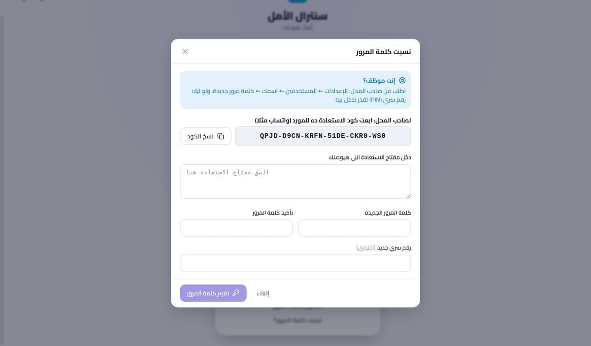
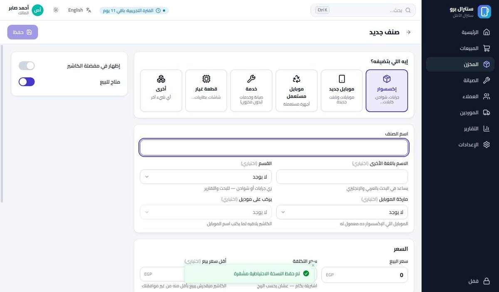
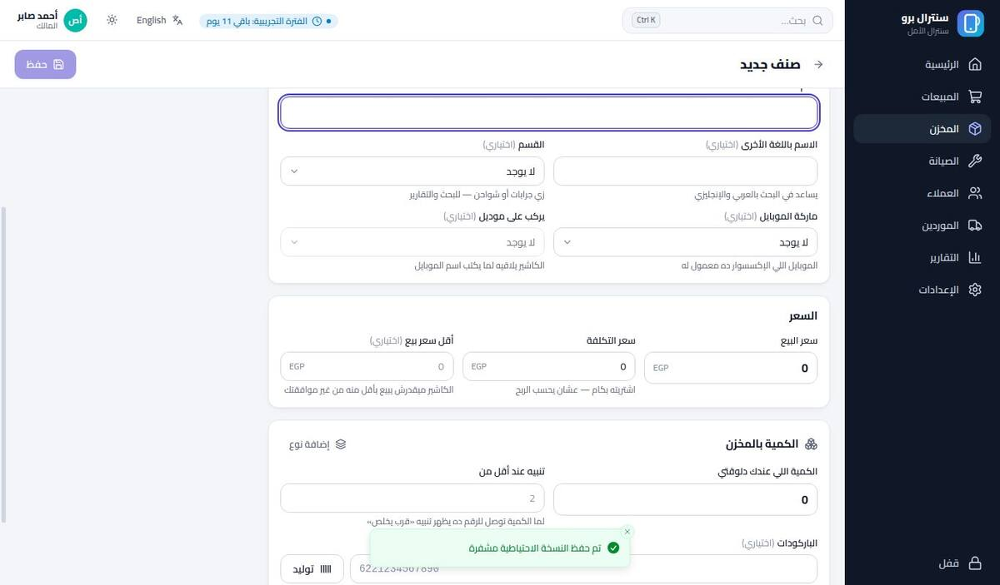
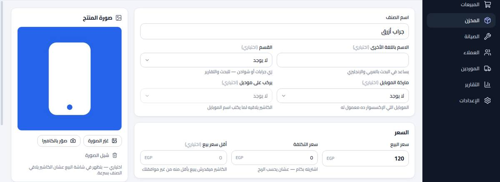
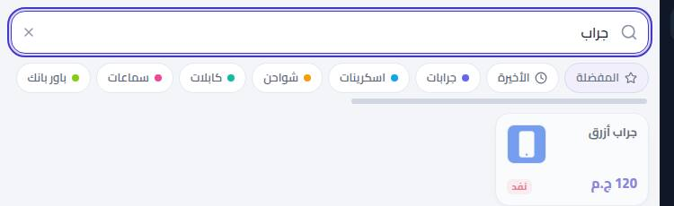
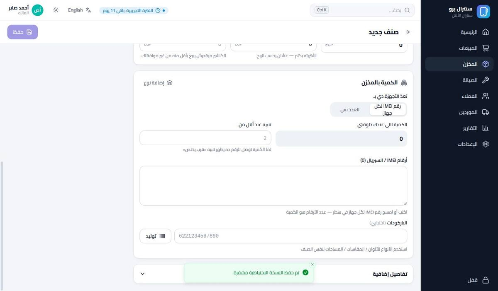
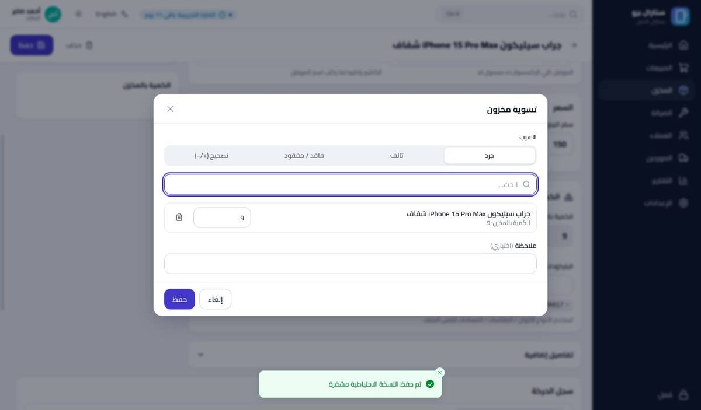
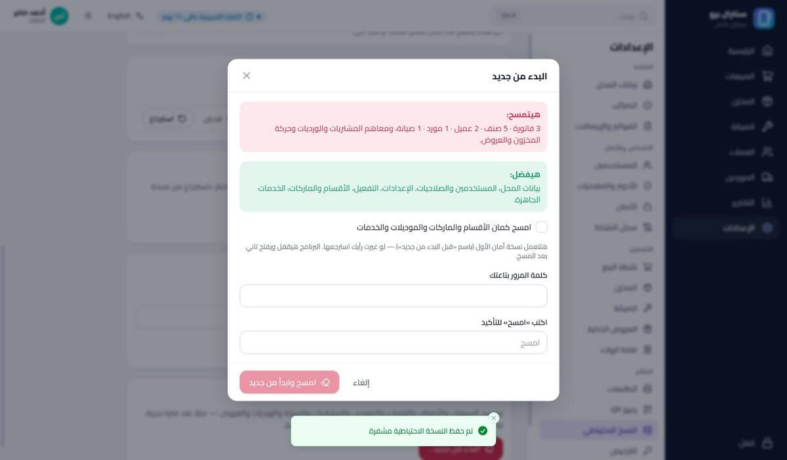

سنترال برو
الأسئلة
- 1. البداية
- 1البرنامج ده بيعمل إيه، وهيساعدني في إيه بالظبط؟
- 2إزاي أثبّت البرنامج وأجهّز المحل لأول مرة؟
- 3إزاي أدخل البرنامج؟ ولو نسيت كلمة المرور أعمل إيه؟
- 4إزاي الشاشة الرئيسية تعرّفني حال المحل في ثانية؟
- 2. البيع والفلوس
- 5إزاي البرنامج يساعدني أبيع أسرع؟
- 6إزاي أبيع بالآجل وأتابع فلوسي عند العملاء؟
- 7إزاي البرنامج يساعدني أبيع أكتر؟
- 8عميل رجّع حاجة أو الفاتورة اتعملت غلط — أعمل إيه؟
- 9إزاي أتأكد إن فلوس الدرج مظبوطة ومحدش بياخد منها؟
- 3. المخزن
- 10إزاي أضيف صنف جديد، وكل خانة معناها إيه؟
- 11إزاي أضيف موبايلات — بأرقام IMEI ولا بالعدد؟
- 12إزاي أعدّل كمية صنف أو أعمل جرد للمحل؟
- 13إزاي أعرف الأصناف اللي قربت تخلص أو مبتتباعش؟
- 14عندي الأصناف في ملف Excel — أدخلها إزاي مرة واحدة؟
- 15إزاي أطبع ملصقات باركود وسعر؟
- 4. الصيانة
- 16إزاي أستلم موبايل صيانة من عميل؟
- 17إزاي أتابع الأجهزة اللي في الورشة؟
- 18إزاي أسلّم الجهاز؟ ولو صاحبه ما رجعش؟
- 5. الموردين والمشتريات
- 19إزاي أسجّل بضاعة اشتريتها وأعرف عليّا كام للمورد؟
- 6. التقارير والبحث
- 20إزاي أعرف كسبت كام النهارده أو الشهر ده؟
- 21إزاي ألاقي أي حاجة بسرعة؟
- 7. الإدارة والأمان
- 22إزاي أضيف موظف وأحدد هو يقدر يعمل إيه؟
- 23إزاي أعرف مين عمل إيه وإمتى؟
- 24إزاي أظبط بيانات المحل والطابعة والإيصال؟
- 25لو الجهاز اتسرق أو الهارد باظ، بياناتي هتروح؟
- 26جرّبت البرنامج بداتا تجريبية — أبدأ الشغل الحقيقي على نضيف إزاي؟
- 27الاشتراك بيشتغل إزاي، وأجدده إزاي؟
- 28سايب الجهاز شوية — أحمي البرنامج إزاي؟
- 29عندي مشكلة — أعمل إيه؟
البداية
تثبيت البرنامج، الدخول، والشاشة الرئيسية
س: البرنامج ده بيعمل إيه، وهيساعدني في إيه بالظبط؟
سنترال برو بيمسك المحل كله في مكان واحد، ومن غير إنترنت:
| بيساعدك في | إزاي |
|---|---|
| البيع بسرعة | بالباركود أو البحث، إيصال في ثانية، ودفع كاش أو فيزا أو محفظة أو آجل. |
| فلوس الدرج | بيحسب اللي المفروض يكون في الدرج، ويطلّعلك أي عجز أو زيادة آخر اليوم. |
| المخزن | الكمية بتنقص لوحدها مع البيع، وبينبهك على اللي قرب يخلص واللي راكد. |
| الصيانة | كل جهاز بتذكرة: استلام، متابعة، قطع غيار، تسليم، وضمان. |
| العملاء والموردين | مين عليه فلوس، ولمين عليك فلوس، بالمليم. |
| زيادة البيع | عروض واقتراحات ذكية للكاشير («اسكرينة مع الجراب بخصم»). |
| المكسب | تقارير المبيعات والربح والمخزن لأي فترة، وتصدير Excel و PDF. |
| الأمان | صلاحيات لكل موظف، سجل بكل عملية، ونسخ احتياطي مشفّر. |

س: إزاي أثبّت البرنامج وأجهّز المحل لأول مرة؟
بتاخد دقيقتين:
- شغّل ملف Central-Pro-Setup.exe. لو ويندوز طلّع رسالة زرقا: More info ← Run anyway.
- افتح Central Pro من سطح المكتب، واضغط ابدأ.
- اختار اللغة، واكتب بيانات المحل (بتظهر على الإيصال)، والعملة.
- اعمل حساب صاحب المحل: الاسم واسم المستخدم وكلمة المرور ورقم سري سريع (PIN).
- الطابعة (أو «تخطي» وظبطها بعدين)، والأقسام الجاهزة، وبعدين دخول.


س: إزاي أدخل البرنامج؟ ولو نسيت كلمة المرور أعمل إيه؟
اختار اسمك واكتب الـ PIN على الأزرار، أو ادخل بكلمة المرور.

نسيت كلمة المرور؟
- لو إنت موظف: صاحب المحل يغيّرهالك من الإعدادات ← المستخدمين. ولو ليك PIN، ادخل بيه.
- لو إنت صاحب المحل: اضغط «نسيت كلمة المرور؟» ← ابعت كود الاستعادة للمورد ← هيبعتلك مفتاح استعادة ← الصقه واختار كلمة مرور جديدة.

س: إزاي الشاشة الرئيسية تعرّفني حال المحل في ثانية؟
أول ما تدخل بتشوف:
- مبيعات وربح النهارده ومقارنة بامبارح.
- أجهزة تحت الإصلاح، والأصناف اللي قربت تخلص، وفلوسك عند العملاء وعليك للموردين.
- رسم آخر 14 يوم، والأكتر مبيعاً، والصيانة المحتاجة متابعة.
- تنبيهات ذكية: اضغط على أي تنبيه يفتحلك القائمة على طول، زي الأصناف اللي نفدت بس.
البيع والفلوس
الكاشير، الآجل، المرتجع، والدرج
س: إزاي البرنامج يساعدني أبيع أسرع؟
- افتح المبيعات، وأول مرة في اليوم افتح الوردية واكتب الفكة.
- امسح الباركود، أو اكتب جزء من الاسم، أو اضغط على القسم.
- زوّد الكمية بـ +، واضغط دفع (F8).
- اختار كاش أو فيزا أو محفظة، واضغط إتمام البيع (F10). البرنامج بيحسب الباقي ويطبع الإيصال.


| المفتاح | الوظيفة |
|---|---|
| F2 | البحث / الباركود |
| F4 | اختيار عميل |
| F6 | خصم |
| F8 / F10 | الدفع / إتمام البيع |
| F9 | تعليق الفاتورة وخدمة عميل تاني |
| Ctrl + K | بحث في البرنامج كله |
س: إزاي أبيع بالآجل وأتابع فلوسي عند العملاء؟
- في البيع اضغط اختيار عميل (F4)، أو اعمل عميل جديد بالاسم والموبايل.
- في الدفع اكتب المبلغ اللي دفعه بس، والباقي بيتسجل عليه آجل.
- لما يجي يدفع: افتح العميل ← تحصيل ← البرنامج كاتب اللي عليه.


- حد الآجل: لكل عميل حد، والبرنامج بيوقّف الآجل لو عدّاه.
- في العملاء فلتر «عليهم فلوس» بيجيبلك المديونين بس.
س: إزاي البرنامج يساعدني أبيع أكتر؟
من العروض بتعمل عروض، والكاشير بيشوف الاقتراح وهو بيبيع:
- اقتراح إضافي: اشترى جراب، اقترح اسكرينة بخصم.
- سعر باقة، خصم كمية، اشتري X وخد Y، تصفية للراكد، وخصم على الفاتورة فوق مبلغ معين.


س: عميل رجّع حاجة أو الفاتورة اتعملت غلط — أعمل إيه؟
- سجل المبيعات ← افتح الفاتورة (ابحث برقمها أو موبايل العميل).
- مرتجع: اختار الكمية اللي راجعة، والبرنامج يرجّعها المخزن ويطلّع فلوسها من الدرج.
- الفاتورة غلط ومفيهاش مرتجع؟ إلغاء العملية.


س: إزاي أتأكد إن فلوس الدرج مظبوطة ومحدش بياخد منها؟
البرنامج بيحسب المفروض يكون في الدرج: الفكة، والبيع الكاش، والتحصيلات، والعربون، ناقص المصروفات والمرتجعات ومدفوعات الموردين.
- أي مصروف (شاي، مواصلات) سجّله سحب / مصروف في الوردية.
- آخر اليوم: قفل الوردية ← عدّ الفلوس واكتبها ← البرنامج يقولك عجز ولا زيادة.


المخزن
الأصناف، الموبايلات، الجرد، والنواقص
س: إزاي أضيف صنف جديد، وكل خانة معناها إيه؟
المخزن ← صنف جديد ← اختار النوع ← املا الخانات ← حفظ. تحت كل خانة مش واضحة فيه شرح صغير.

| الخانة | معناها |
|---|---|
| إيه اللي بتضيفه؟ | إكسسوار، موبايل جديد أو مستعمل، خدمة (من غير مخزون)، قطعة غيار. |
| اسم الصنف | الاسم اللي على الإيصال. |
| الاسم باللغة الأخرى | عشان يطلع لو كتبت «جراب» أو «Case». |
| القسم | زي جرابات أو شواحن، للبحث والتقارير. |
| ماركة الموبايل / يركب على موديل | للإكسسوار: الموبايل اللي بيركب عليه، فالكاشير يلاقيه لما يكتب اسم الموبايل. |
| سعر البيع / التكلفة | للعميل / إنت اشتريته بكام (عشان الربح). |
| أقل سعر بيع | الكاشير ميقدرش ينزل تحته من غير موافقتك. |
| الكمية اللي عندك دلوقتي | العدد اللي في المحل حالاً. |
| تنبيه عند أقل من | لما توصل للرقم ده يظهر في «قرب يخلص». |
| الباركود | امسح اللي على العلبة، أو «توليد» واطبعه ملصق. |
| صورة المنتج (اختياري) | «اختار صورة» من الجهاز أو «صوّر بالكاميرا». بتظهر على الصنف في شاشة البيع وفي قايمة المخزن، فالكاشير يعرفه من شكله. |



س: إزاي أضيف موبايلات — بأرقام IMEI ولا بالعدد؟
في الموبايل الجديد أو المستعمل، خانة «تعدّ الأجهزة دي بـ» فيها اختيارين:
- رقم IMEI لكل جهاز: اكتب أو امسح رقم كل جهاز في سطر، وعدد الأرقام هو الكمية. كل جهاز بيبقى ليه تاريخه للضمان والمرتجع.
- العدد بس: اكتب الكمية زي أي صنف.

س: إزاي أعدّل كمية صنف أو أعمل جرد للمحل؟
- صنف واحد: افتح الصنف ← تعديل الكمية جنب الكمية ← اكتب العدد الحقيقي ← حفظ.
- جرد أو تالف أو مفقود لكذا صنف: المخزن ← تسوية المخزون ← اختار السبب والأصناف.
- كل تغيير بيتسجل في حركة المخزون بالسبب واسم الموظف.


س: إزاي أعرف الأصناف اللي قربت تخلص أو مبتتباعش؟
- في المخزن الفلاتر: كمية قليلة، نفد، راكد.
- الرئيسية بتنبهك، واضغط على التنبيه يفتح القائمة.
- التقارير ← المخزن: قيمة البضاعة، والسريع والبطيء في البيع.


س: عندي الأصناف في ملف Excel — أدخلها إزاي مرة واحدة؟
- المخزن ← استيراد (أو حمّل النموذج الجاهز واملاه).
- اسحب الملف. البرنامج بيتعرف على الأعمدة لوحده (الاسم، السعر، الكمية، الباركود).
- بيوريك الصفوف اللي فيها مشاكل قبل ما يضيف حاجة، وبعدين استيراد.

ونفس الطريقة لاستيراد العملاء. ولو حبيت تغيّر أسعار كل الأصناف: عدّل العمود في الملف واستورده تاني بخيار «تحديث».
س: إزاي أطبع ملصقات باركود وسعر؟
المخزن ← طباعة ملصقات ← اختار الأصناف والعدد ← طباعة. لو الصنف معندوش باركود، اعمله «توليد» من شاشة الصنف.

الصيانة
من الاستلام لحد التسليم
س: إزاي أستلم موبايل صيانة من عميل؟
- الصيانة ← استلام جهاز: العميل وموبايله، والجهاز والـ IMEI وقفل الشاشة.
- العطل، والسعر المتوقع، والعربون، والملحقات، وصور وتوقيع العميل.
- اطبع إيصال الاستلام فيه رقم الصيانة وكود QR.

س: إزاي أتابع الأجهزة اللي في الورشة؟
- لوحة الصيانة: عمود لكل حالة، وكل كارت جهاز.
- افتح التذكرة ← نقل إلى ← الحالة الجديدة (جاري الفحص، في انتظار قطع الغيار، جاري الإصلاح، جاهز للتسليم...).
- ضيف قطع الغيار للتذكرة، وبتتخصم من المخزن.
- الأجهزة المتأخرة والجاهزة بتظهر تنبيه في الرئيسية.


س: إزاي أسلّم الجهاز؟ ولو صاحبه ما رجعش؟
تسليم للعميل ← حصّل الباقي ← توقيع العميل. الضمان بيبدأ من يوم التسليم.

الموردين والمشتريات
البضاعة الداخلة والحسابات
س: إزاي أسجّل بضاعة اشتريتها وأعرف عليّا كام للمورد؟
- الموردين ← فاتورة شراء ← المورد والأصناف والكميات والأسعار.
- تم استلام البضاعة ← المخزون بيزيد والتكلفة بتتحدث.
- اكتب اللي دفعته، والباقي بيتسجل على حسابك عند المورد.
- دفع للمورد بعدين: كاش أو تحويل.


التقارير والبحث
مكسبك، وأي حاجة في ثانية
س: إزاي أعرف كسبت كام النهارده أو الشهر ده؟
التقارير ← اختار الفترة (النهارده، الأسبوع، الشهر، أو من تاريخ لتاريخ):
- المبيعات: صافي البيع، وبكل طريقة دفع، وبالقسم، والأكتر مبيعاً.
- الأرباح: ربح الأصناف والصيانة والخدمات بعد المرتجع.
- الموظفين والموردين والصيانة.
- كل جدول ليه أزرار Excel وCSV وPDF.


س: إزاي ألاقي أي حاجة بسرعة؟
اضغط Ctrl+K من أي شاشة، واكتب صنف أو عميل أو موبايل أو رقم فاتورة أو رقم صيانة أو IMEI. وتقدر تمسح كود QR اللي على الإيصال أو التذكرة.

الإدارة والأمان
الموظفين، الإعدادات، الحماية، والاشتراك
س: إزاي أضيف موظف وأحدد هو يقدر يعمل إيه؟
- الإعدادات ← المستخدمين ← مستخدم جديد: الاسم واسم المستخدم والدور وكلمة المرور والـ PIN.
- الأدوار والصلاحيات: حدد كل دور يعمل إيه (خصم لحد كام، يشوف التكلفة، يعمل مرتجع...).


س: إزاي أعرف مين عمل إيه وإمتى؟
الإعدادات ← سجل النشاط: كل بيع وإلغاء وتعديل سعر وتسوية مخزون ودخول، باسم الموظف ووقته. محدش يقدر يمسحه.

س: إزاي أظبط بيانات المحل والطابعة والإيصال؟
- بيانات المحل: الاسم والتليفون والعنوان (على الإيصال).
- نقطة البيع: طرق الدفع، والبيع الآجل، والطباعة التلقائية.
- الطابعات: طابعة الإيصال (58 أو 80 مم) والـ A4 والملصقات، و«صفحة تجربة».
- رموز QR: تظهر على إيه.


س: لو الجهاز اتسرق أو الهارد باظ، بياناتي هتروح؟
لأ، لو النسخ الاحتياطي شغال. البرنامج بياخد نسخة تلقائي كل يوم وعند القفل، وكلها مشفّرة.
- الإعدادات ← النسخ الاحتياطي ← مكان النسخة الإضافية: اختار فلاشة أو هارد خارجي.
- قبل أي حاجة مهمة: نسخة احتياطية الآن.
- جهاز جديد: ثبّت البرنامج ← أول شاشة ← استرجاع من نسخة احتياطية.

س: جرّبت البرنامج بداتا تجريبية — أبدأ الشغل الحقيقي على نضيف إزاي؟
الإعدادات ← النسخ الاحتياطي ← البدء من جديد (لصاحب المحل بس):
- بيتمسح: المبيعات والأصناف والعملاء والموردين والمشتريات والصيانة والورديات. والترقيم بيرجع من S-000001.
- بيفضل: بيانات المحل، والمستخدمين، والإعدادات، والتفعيل، والأقسام والخدمات الجاهزة.
- محتاج كلمة المرور وتكتب «امسح». وبياخد نسخة أمان قبلها، فلو غيرت رأيك استرجعها.

س: الاشتراك بيشتغل إزاي، وأجدده إزاي؟
باقة واحدة: 15 يوم تجربة مجاناً، وبعدها اشتراك 3 شهور بـ 500 جنيه، بكل المميزات ومن غير حد للمستخدمين.
- الأيام الباقية ظاهرة دايماً فوق، وفي آخر 7 أيام بيظهر شريط فيه السعر وكود الطلب.
- للتجديد: اضغط «نسخ الكود» وابعته للمورد ← هيبعتلك مفتاح ← «إدخال مفتاح التجديد» ← الصقه ← تفعيل.
- جدّد بدري براحتك: كل مفتاح بيتضاف على الأيام الباقية.
- بعد النهاية 3 أيام سماح، وبعدها البرنامج يقف لحد التجديد. بياناتك عمرها ما بتتمسح.


س: سايب الجهاز شوية — أحمي البرنامج إزاي؟
اضغط قفل (آخر القائمة). الشغل المفتوح بيفضل زي ما هو، والبرنامج كمان بيقفل لوحده بعد فترة من غير استخدام.

س: عندي مشكلة — أعمل إيه؟
| المشكلة | الحل |
|---|---|
| القارئ مش بيضيف الصنف | اتأكد إن الباركود متسجل على الصنف، وإن المؤشر في خانة البحث (F2). |
| «الطابعة غير متاحة» | شغّلها وتأكد إنها مختارة في الإعدادات ← الطابعات. البيع اتسجل، واطبع من سجل المبيعات. |
| رسالة خطأ | البرنامج بيقولك السبب بالظبط وتعمل إيه. اقراها كويس، ولو مش واضحة صوّرها وابعتها للمورد. |
| نسيت كلمة المرور | السؤال 3. |
| «الفلوس اللي في الدرج مش كفاية» | ادفع بطريقة تانية (تحويل)، أو جزء دلوقتي والباقي بعدين. |
| «المساحة على الجهاز خلصت» | انقل النسخ القديمة لفلاشة وامسح ملفات مش محتاجها. بياناتك سليمة. |